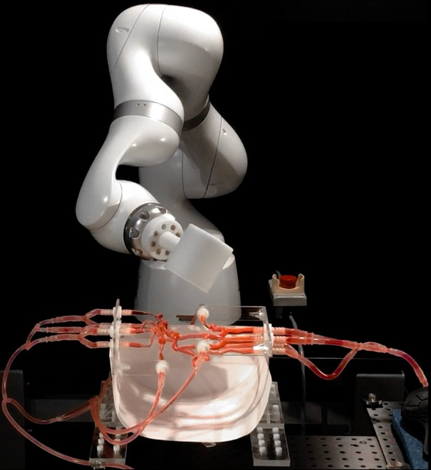

Magnetic navigation · mitmagwire_kim2022
Magnetic soft wire
MIT telerobotic magnetic soft guidewire system

1 / 9


- Family
- Magnetic navigation (magnetic-navigation)
- Devices
- 2 devices, driven independently or simultaneously: own magnetic soft guidewire, 400 um OD (tapered nitinol core in a TPU jacket with 20 vol% NdFeB, magnetically responsive distal 50 mm, coreless 4 mm tip) and a microcatheter; 0.0115-in coils and a Solitaire X stent retriever delivered through it; 7 F sheath (kim2022_telerobotic p. 3-4, 18); 2019 prototypes 600 um (PDMS + NdFeB, 80 um nitinol core) and 810 um (TPU + NdFeB) (kim2019_ferromagnetic)
- Degrees of freedom
- 7-DOF arm (KUKA LBR Med 14 R820) sets the magnet pose (6-DOF end-effector control; pole flipped by turning axis 7 by 180 degrees) + 2 linear advancing units for wire and microcatheter (kim2022_telerobotic p. 3, 7, 17)
- Push
- Magnetic
- Twist
- Field direction
- Tested up to
- Animal
- Sim-to-real
- None found — No simulation-trained controller found for this robot.
Testing
- Highest level
- Animal
- What was tested
- head phantom under fluoroscopy (navigation 45.0 +- 4.0 s, n = 5); MCA aneurysm coiling and clot retrieval in phantoms (n = 3 each); 1 pig (56 kg Yorkshire, brachial-artery tortuosity model, 124.6 +- 19.7 s, n = 5); learning curve 6 novices and 2 experienced users x 15 trials; robot vs manual: one interventionalist, 10 trials each (kim2022_telerobotic pp. 8-16, 18)
- Key numbers
- robot vs manual 42.9 +- 10.5 vs 63.7 +- 22.4 s (P < 0.05); the manual wire crossed the siphon aneurysm in 5 of 10 trials; field at most 80 mT, gradient 1.75 mT/mm; N52 cylindrical magnet 100 mm diameter x 100 mm; tip deflection about 120 deg (attraction) and 90 deg (repulsion) (kim2022_telerobotic pp. 5-16)
Mechanism
- Push (translation)
- magnetic (steering); insertion by two commercial worm-drive advancers (Stereotaxis QuikCAS Cardiodrive) driven by DC gearmotors through flexible shafts (kim2022_telerobotic p. 3, 18)
- Twist (rotation)
- field direction, no shaft rotation
- Device range
- magnet working distance d/R 2.64-3.67, i.e. 80-30 mT at the tip (kim2022_telerobotic p. 7)
- Target anatomy
- neuro (phantoms, porcine brachial artery with accentuated tortuosity)
Sensing and interface
- Force sensing
- none: 'the advancing unit of our system does not provide any tactile or haptic feedback' (kim2022_telerobotic p. 17)
- Leader and haptics
- no haptics: remote console a few metres away with a 6-DOF SpaceMouse Pro knob and buttons to advance/retract; ROS MoveIt/RViz virtual view (kim2022_telerobotic p. 17-18)
- Imaging
- real-time fluoroscopy, DSA roadmaps, 3D rotational angiography; the NdFeB particles make the wire radiopaque; compatible with standard biplane fluoroscopy (kim2022_telerobotic p. 8, 17)
- Sterility
- N.R.
Size
- Footprint (mm)
- N.R. (arm on a mobile platform beside the operating table, kim2022_telerobotic p. 3)
- Mass (kg)
- magnet and fixture 7 kg (kim2022_telerobotic p. 18); arm N.R.
Simulation
- Simulation model
- field maps in COMSOL; 2019 Abaqus finite-element model of the soft continuum robot (kim2019_ferromagnetic p. 13); MoveIt/RViz virtual scene used to plan magnet poses; magnet pose from joystick input via a Jacobian pseudo-inverse, no guidewire model in the loop (kim2022_telerobotic p. 17)
- Sim-trained controller
- none found (no learned controller in kim2019 or kim2022)
Versions
- Lineage
- 2019 ferromagnetic soft continuum robots: device only, magnet moved by hand and wire pushed by hand (kim2019_ferromagnetic); 2022 telerobotic system: KUKA arm with a 100 mm magnet, two motorised advancers, remote console, 400 um wire, pig (kim2022_telerobotic)
Sources
- Telerobotic neurovascular interventions with magnetic manipulation · Science Robotics, 2022 · doi:10.1126/scirobotics.abg9907 [kim2022_telerobotic]
- Ferromagnetic soft continuum robots · Science Robotics, 2019 · doi:10.1126/scirobotics.aax7329 [kim2019_ferromagnetic]
Notes
- Notes
- Highest-profile magnetic guidewire. Mount Sinai does not appear in either paper (corrected to MGH / Cincinnati / Philips). The earlier Dryad-based 0.72-0.91 mm diameter guess is replaced by the stated 400 um. | X2 2026-11-08: raised to full text.
This record
- Read level
- full — full (kim2019_ferromagnetic, kim2022_telerobotic)
- Picture
- MIT News press image MIT-Robo-Stroke-02-press.jpg (left panel: robot arm with actuating magnet over the neurovascular phantom), news.mit.edu/sites/default/files/download/202204/ — licence: CC BY-NC-ND (MIT News terms: no alteration other than cropping; credit "Courtesy of the researchers"); grade A
- Picture changes
- crop; 2 label areas on the plain black background set to black; white text "Neurovascular Phantom" over the phantom erased (LaMa, text mask only)
- Found by
- actuated-tip: Search of actuated-tip and magnetic devices.
- Data
- JSON · YAML:
records/robots/mitmagwire_kim2022.yaml - Correction
- Suggest a correction [repository not created yet]